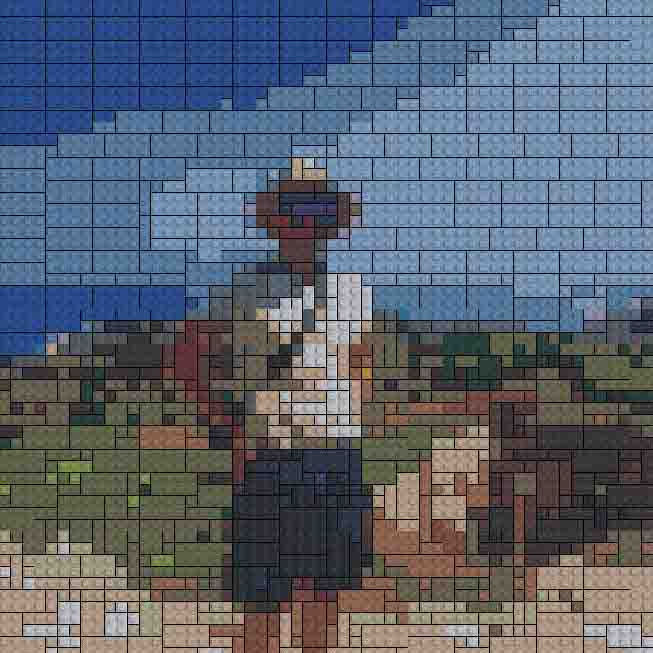

Star Dwarves was a small game I created with my classmate, in which the player controlled a small spaceship and was supposed to avoid procedurally generated obstacles. The purpose of the game was for us to learn more about computer graphics, and to learn more about game programming. The game was created in C++ and OpenGL, with libraries like GLFW and ASSIMP. The space ship model was made by me in the software BlockBench.
Johan Björnfoot
About this website
Hey there! I'm so glad you found my web page.
My name is Johan Björnfoot (formerly Arlinger since I got married recently), and I am 25 years old and live at the moment in Linköping, Sweden. This here is my website that I mainly use for posting my projects that I make in my spare time, but it also serves as sort of a resume for me. Please, look around and let me know if you found something you did or didn't like.
This website was made in pure HTML, CSS and JS, some of the icons under the contact tab was acquired from fontawesome.
Curriculum Vitae
Education
Masters degree in Media Technology
Linköping University
2022 -
Bachelors degree in Media Technology
Linköping University
2019 - 2022
Technical Preporatory Year
Chalmers University of Technology
2018 - 2019
High School, Orientation in Natural Sciences
Linköping University
2014 - 2017
Experience
University Study Coach
Allakando
2023 -
Web Service Consultant
Unitalent
2023 -
Software Developer
Exsitec AB
Summer 2023
Kitchen Sales Co-Worker
IKEA
2020 - 2023
Alarm operator
Sector Alarm
Summer 2019
Store Clerk
Pressbyrån Sahlgrenska Centralkomplexet
2017 - 2019
Software knowledge
Great knowledge in C++, HTML, JavaScript and CSS
Some knowledge in react, node, Java and Python
Has worked with OpenGL and WebGL
Great knowledge and experience working in Adobe CC
Has some experience in Unreal Engine and Blender
Other
- Speaks swedish and english fluently
- Has swedish driving license
- Likes really good puns!
Projects
Here are a few of my projects that I have been working on.
Star Dwarves
Ray tracing
During my first year of my master's programme I wrote my own Ray tracer in C++ for the course TNCG15: Advanced Global Ilummination and Rendering. The Ray tracer runs on the CPU and uses Monte-Carlo ray tracing together with Möller-Trumbore surface intersection computation techniques. The world which it renders is implicitly described, with mathematical descriptions for every surface. It also has support for either diffuse surfaces, mirror surfaces or light emissive surfaces.The final image is saved in a .ppm file. Libraries used for this project was OpenGL Mathematics, to help with vector calculations.
Landlord Simulator 2022
Despite its misleading name, this project was a VR-based horror game project, created in Unreal Engine 5. The game is rather short, but was a way for me and my partners to explore how VR-games can be created, and how to incorporate immersive sounds in the game, as a lot of gameplay queues in the game are given through sound. Examples of this can be hearing where mice are in the walls to place mouse traps in the correct position, or finding which resident in the building is making too much noise. Eventually as the game progresses, it turns out the building the player is working in has a dark secret; a monster also lives in the building.
Lego Mosaics
To be able to reproduce images using LEGO pieces, I created a small MATLAB script that read an image file and creates an image reproduced with LEGO bricks, favoring either vertical or horizontal placement of the pieces.

Minecraft Shader: Vanilla Looks
During the pandemic I played a lot of Minecraft and using our newly aqcuired knowledge of shader programming, me and a friend created a shader pack for Minecraft which we called Vanilla Looks. The shaderpack included shader techniques like depth of field, water reflections (based in screen space) and bloom.
 +46 707 35 00 03
+46 707 35 00 03- johar192@student.liu.se
 LinkedIn profile
LinkedIn profile
Games
Pachinko
Inspired by the japanese mechanical game with the same name (パチンコ), this game is about bouncing balls on all pegs on the game board. You win when all pegs are gone or you lose when you're out of balls. Try bouncing the ball on multiple pegs in the same shot, that will result in combo points!